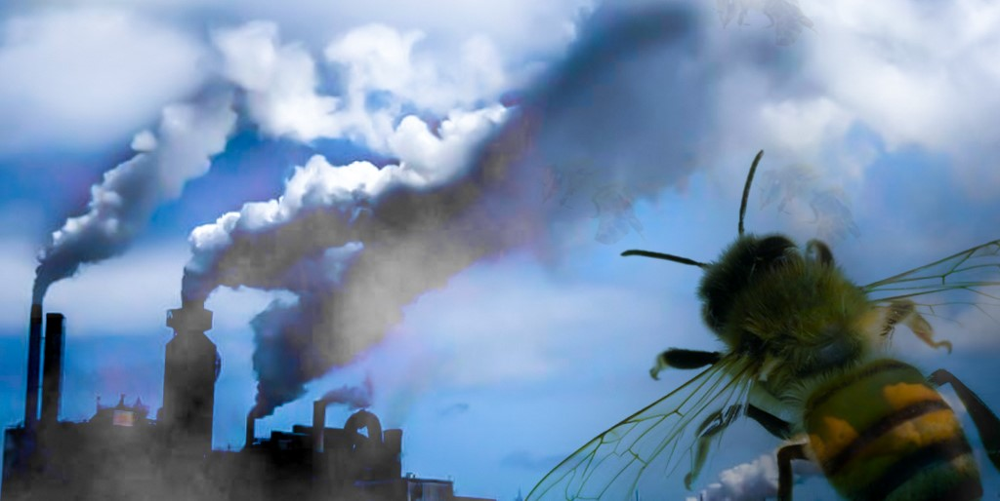
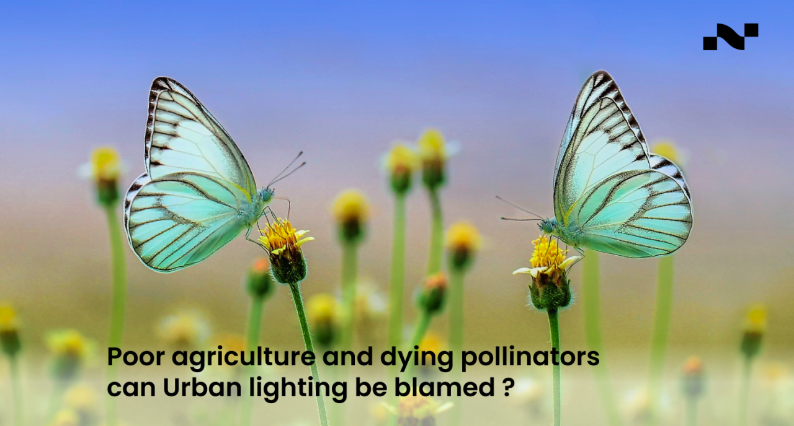

Types of Pollinators
Importance of pollinators
Different types of pollution
effect pollinators
Effect on environment if
number of pollinators decline
How to save pollinators
Abstract
posted on
23 october 2024
What is Pollinators?
A pollinator is any organism that helps transfer pollen from the male part of a flower (stamen) to the female part (stigma) of the same or another flower.This process is essential for the fertilization of plants, leading to the production of fruits, seeds, and new plants

Types of pollinators
Pollinators are essential for the reproduction of many plants, and they come in various forms. Here are the main types of pollinators:
1. Insects
• Bees: The most effective pollinators, bees (like honeybees, bumblebees, and solitary bees) intentionally collect pollen and nectar for food.
• Butterflies: They are attracted to brightly colored flowers and feed on nectar, inadvertently transferring pollen.
• Moths: Similar to butterflies, many moths are nocturnal pollinators that are attracted to night-blooming flowers.
• Flies: Certain flies, including hoverflies and bee flies, can also be effective pollinators.
• Beetles: Some beetles, particularly those that feed on pollen, contribute to pollination.
2. Birds
• Hummingbirds: These birds are attracted to nectar-rich flowers and are important pollinators in the Americas. They have specialized adaptations for feeding on flowers.
• Other Birds: Certain species, such as sunbirds and honeycreepers, also play a role in pollination in their respective habitats.
3. Bats
• Fruit Bats and Nectar Bats: These bats are important pollinators for many night-blooming flowers and fruiting plants, especially in tropical and desert environments.
4. Other Mammals
• Small Mammals: Some small mammals, like certain rodents, can also assist in pollination while foraging for food.
• Primates: In some ecosystems, primates may contribute to pollination, particularly in tropical regions.
5. Wind
• While not a biological pollinator, wind is a significant natural mechanism for pollination, especially for plants like grasses and many trees (e.g., pines and oaks) that release large amounts of pollen into the air.
6. Water
• Some aquatic plants rely on water currents to disperse their pollen, although this is less common than other forms of pollination.
Each type of pollinator plays a unique role in maintaining the health of ecosystems and supporting agricultural productivity. The diversity of pollinators is crucial for the pollination of a wide variety of plants, and their conservation is vital for biodiversity and food security.

Importance of pollinators
Pollinators play a crucial role in both ecosystems and agriculture. Here are some key points highlighting their importance:
1. Biodiversity Support
• Plant Reproduction: Pollinators facilitate the reproduction of many flowering plants by transferring pollen, which is essential for fertilization and seed production. This process helps maintain genetic diversity within plant populations.
• Ecosystem Health: A diverse range of plants supports various animal species, contributing to a balanced ecosystem. Healthy ecosystems provide habitat, food, and resources for wildlife.
2. Food Production
• Agricultural Crops: Many of the crops that humans rely on for food, such as fruits, vegetables, nuts, and seeds, depend on pollinators. It is estimated that about 75% of the world's flowering plants and around 35% of global food crops rely on animal pollination.
• Economic Value: Pollination contributes significantly to the economy. In the U.S. alone, the economic value of pollination services provided by bees and other pollinators is estimated to be around $40 billion annually.
3. Nutritional Variety
• Diverse Diets: Pollinators help produce a wide variety of food products, enhancing human diets and nutrition. Fruits, vegetables, and nuts that require pollination are vital sources of vitamins, minerals, and other nutrients.
4. Ecosystem Services
• Soil Health: Pollinators contribute to the growth of plants that prevent soil erosion, improve soil fertility, and enhance water retention.
• Carbon Sequestration: Healthy plant communities, supported by pollinators, play a role in capturing and storing carbon dioxide, helping mitigate climate change.
5. Cultural and Aesthetic Value
• Cultural Significance: Many cultures have deep connections with plants and flowers that are pollinated by animals, influencing art, traditions, and practices.
• Aesthetic Value: Pollinator-friendly gardens and landscapes enhance the beauty of environments, contributing to mental well-being and recreational opportunities.
6. Research and Education
• Scientific Study: Pollinators are subjects of extensive research, providing insights into ecology, evolution, and conservation biology. Studying pollinators helps us understand ecological interactions and the impacts of environmental change.
The importance of pollinators extends beyond just food production; they are integral to maintaining biodiversity, supporting healthy ecosystems, and contributing to economic stability. Protecting pollinator populations is essential for sustainable agriculture, environmental health, and the overall well-being of the planet. Efforts to conserve and promote pollinator habitats are vital for ensuring their continued presence and the benefits they provide.
Different types of pollution effect pollinators
Pollution has significant adverse effects on various types of pollinators, impacting their health, behavior, and the ecosystems they support. Here’s a detailed overview of how pollution affects different pollinators:
1. Air Pollution
Air pollution significantly impacts pollinators, particularly insects like bees and butterflies, which play a crucial role in pollinating many plants and crops. Here’s a detailed overview of how air pollution affects these vital species:Respiratory Distress
Pollutants like ozone can irritate their delicate respiratory systems, leading to breathing difficulties and reduced lifespan.
Impaired Navigation
Air pollution can affect pollinators' ability to navigate and find food sources, ultimately disrupting their foraging behaviour.
Reduced Pollination Efficiency
Pollutants can negatively impact pollinators' ability to collect pollen, leading to reduced pollination efficiency and a decline in plant reproduction.
Air pollution poses a serious threat to pollinators by impairing their sensory abilities, reducing foraging efficiency, and negatively impacting their health and the quality of their food sources. Addressing air pollution through effective environmental policies and conservation efforts is essential to protect pollinator populations and ensure the continued provision of vital ecosystem services.

2. Water Pollution
Water pollution has a profound impact on pollinators, particularly those that rely on aquatic ecosystems for their life cycles or food sources. Here’s a detailed overview of how water pollution affects these essential species:Habitat Destruction
Pollution can degrade water quality, destroying crucial aquatic habitats that support pollinators, leading to their displacement and decline.
Impaired Development
Pollutants can disrupt the development of aquatic pollinators, leading to deformities, reduced survival rates, and ultimately, population decline.
Reduced Food Availability
Pollution can affect the health and abundance of aquatic plants, reducing food availability for pollinators and impacting their survival.
Water pollution poses significant threats to pollinators by introducing toxic substances, degrading habitats, and disrupting food webs. Protecting water quality through sustainable agricultural practices, pollution control measures, and habitat restoration is essential for safeguarding pollinator populations and maintaining the vital ecosystem services they provide.
3. Soil Pollution
Soil pollution has significant implications for pollinators, impacting their health, behavior, and the ecosystems they inhabit. Here’s an overview of how soil pollution affects these vital species:Heavy Metals
Accumulate in soil, impacting pollinator development and reducing their ability to reproduce.
Pesticides and Industrial Waste
Can directly poison pollinators or disrupt their immune systems, making them more susceptible to diseases.
Habitat Degradation
Soil pollution can degrade habitats, making it challenging for ground-dwelling pollinators to find suitable nesting sites.
Food Source Reduction
Pollutants can harm or kill plants that ground-dwelling pollinators rely on for food, decreasing food availability.Can contaminate soil with toxic chemicals that interfere with pollinator development and survival.
Health Impacts
Pollutants can accumulate in the bodies of ground-dwelling pollinators, leading to health problems and reduced lifespan.
Soil pollution poses a significant threat to pollinators by introducing harmful chemicals, degrading soil health, and altering plant communities. Protecting soil quality through sustainable agricultural practices, reducing pesticide use, and implementing pollution control measures is crucial for safeguarding pollinator populations and ensuring the continued provision of essential ecosystem services.
4. Light Pollution
Light pollution has a profound impact on pollinators, disrupting their natural behaviors and affecting the ecosystems they support. Here’s a detailed overview of how light pollution influences pollinators:Disrupted Cycles
Artificial light disrupts pollinators' natural sleep-wake cycles, affecting their ability to forage and reproduce.
Attracted to Light
Pollinators like moths are attracted to artificial light, which can lead to disorientation and death.
Reduced Pollination
Disrupted circadian rhythms can affect pollinators' ability to pollinate plants effectively, impacting plant reproduction.
Light pollution poses a significant threat to pollinators by disrupting their natural behaviors, affecting plant interactions, and ultimately impacting ecosystem health. Addressing light pollution through sustainable practices and community engagement is essential for protecting these vital species and the ecosystems they support.

5. Pesticides and Chemical Pollution
Pesticides and chemical pollution have significant adverse effects on pollinators, which are crucial for the reproduction of many plants and the overall health of ecosystems. Here’s an overview of how these pollutants impact pollinator populations:Direct Toxicity
Pesticides can directly poison pollinators, leading to immediate death or long-term health problems.
Impaired Development
Exposure to pesticides can affect pollinator development, leading to deformities and reduced lifespan.
Reduced Reproduction
Pesticide exposure can disrupt pollinators' reproductive systems, leading to decreased fertility and lower reproductive success.
Pesticides and chemical pollution pose significant threats to pollinators by causing direct toxicity, disrupting foraging and reproductive behaviors, and diminishing the availability of food sources. Addressing these issues through sustainable agricultural practices, regulatory measures, and public awareness is crucial for protecting pollinator populations and the ecosystems they support.
6. Mitigating Pollution
Mitigating pollution has a profoundly positive effect on pollinators and the ecosystems they support. By reducing various forms of pollution—such as chemical, light, and noise pollution—efforts can lead to healthier environments for pollinators, improved biodiversity, and enhanced ecosystem services. Here’s an overview of how mitigating pollution can benefit pollinators:Reduce Emissions
Reducing greenhouse gas emissions through sustainable practices can mitigate climate change and air pollution.
Promote Sustainable Agriculture
Using eco-friendly farming practices can minimize pesticide and fertilizer runoff, reducing water and soil pollution.
Support Pollinator Conservation
Creating pollinator-friendly habitats and reducing pesticide use can help protect pollinator populations.
Mitigating pollution has significant positive effects on pollinators, enhancing their health, reproductive success, and overall populations. By restoring habitats, reducing chemical inputs, and promoting biodiversity, we can create healthier ecosystems that support pollinators and the vital services they provide. These efforts not only benefit pollinators but also contribute to the resilience of ecosystems and food security for human populations.
7. Noise Pollution
Noise pollution, often overlooked in discussions about environmental stressors, can have significant impacts on pollinators and their behaviors. Here are some key effects of noise pollution on pollinators:Mating Disruption
Loud noise can interfere with pollinators' mating calls and make it difficult for them to find mates.
Foraging Challenges
Noise can hinder pollinators' ability to locate flowers and collect nectar, leading to reduced foraging efficiency.
Increased Stress
Constant exposure to noise can increase stress levels in pollinators, making them more vulnerable to diseases and parasites.
Noise pollution poses a significant threat to pollinators by disrupting their communication, foraging behavior, and reproductive success. The impacts of noise can lead to decreased pollination efficiency and altered plant-pollinator interactions, ultimately affecting ecosystem health and biodiversity. Addressing noise pollution through urban planning, habitat restoration, and public awareness can help mitigate these effects and support the conservation of pollinator populations.
Effect on environment if number of pollinators decline
The decline in pollinator populations can have profound and far-reaching effects on the environment, ecosystems, and human societies. Here are some of the key consequences of reduced pollinator numbers:
1. Reduced Plant Reproduction
• Decreased Pollination: Many flowering plants rely on pollinators for reproduction. A decline in pollinators can lead to lower rates of pollination, resulting in fewer seeds and fruits.
• Loss of Plant Diversity: Some plants may become extinct or decline significantly in abundance if their pollinators are no longer present. This can lead to a reduction in plant diversity, which is crucial for ecosystem resilience.
2. Impacts on Food Production
• Crop Yields: A significant proportion of the world’s food crops (approximately 75%) rely on animal pollination. Declines in pollinator populations can lead to reduced yields of fruits, vegetables, nuts, and seeds, impacting food security.
• Economic Consequences: The agricultural sector could face economic losses due to reduced crop yields, which can lead to higher food prices and increased reliance on imported goods. This can disproportionately affect low-income communities.
3. Altered Ecosystem Dynamics
• Disruption of Food Webs: Pollinators are integral to many ecosystems, and their decline can disrupt food webs. Plants that rely on pollinators may decline, affecting herbivores that depend on those plants for food, and subsequently impacting predators and other species in the food chain.
• Habitat Changes: A decline in flowering plants can lead to changes in habitat structure, which can affect a wide range of species, including those that are not directly dependent on pollinators.
4. Loss of Biodiversity
• Species Extinction: Many species are interdependent; the decline of pollinators can lead to the extinction of plant species, which in turn can lead to the extinction of species that rely on those plants for food and habitat.
• Reduced Genetic Diversity: With fewer pollinators, the genetic diversity of plant populations may decline, making them more vulnerable to diseases, pests, and changing environmental conditions.
5. Decreased Ecosystem Services
• Soil Health: Healthy plant communities contribute to soil stability, nutrient cycling, and erosion control. A decline in plant diversity can negatively impact soil health and increase erosion.
• Water Regulation: Vegetation plays a key role in regulating water cycles. A decline in plant cover can lead to altered water retention and increased runoff, potentially leading to flooding and reduced water quality.
6. Cultural and Aesthetic Losses
• Cultural Significance: Many cultures have deep connections to flowering plants and the ecosystems they inhabit. The decline of pollinators can affect cultural practices, traditions, and the aesthetic value of natural landscapes.
• Recreational Opportunities: Reduced biodiversity and changes in plant communities can impact recreational activities such as hiking, birdwatching, and gardening, which are often tied to healthy ecosystems.
7. Increased Reliance on Artificial Pollination
• Economic Costs: In agricultural systems where pollinators are declining, farmers may need to resort to artificial pollination methods, which can be labor-intensive and costly.
• Sustainability Issues: Relying on artificial pollination may not be a sustainable long-term solution, as it does not address the underlying causes of pollinator decline.
The decline of pollinators poses a significant threat to environmental health, biodiversity, and food security. It can trigger a cascade of negative effects that impact ecosystems, economies, and human well-being. To mitigate these impacts, it is crucial to implement conservation strategies that protect pollinator habitats, reduce pesticide use, promote biodiversity, and raise public awareness about the importance of pollinators.
How to save pollinators
Saving pollinators is crucial for maintaining biodiversity, food security, and healthy ecosystems. Here are several effective strategies that individuals, communities, and policymakers can adopt to help protect and support pollinator populations:
1. Create Pollinator-Friendly Habitats
• Plant Native Flora: Encourage the planting of native flowering plants that provide nectar and pollen throughout the growing season. Diverse plantings attract a variety of pollinators.
• Establish Pollinator Gardens: Create gardens specifically designed for pollinators, incorporating a mix of flowers, shrubs, and trees that bloom at different times of the year.
• Provide Nesting Sites: Leave areas of bare soil for ground-nesting bees and create habitats with dead wood, brush piles, or bee hotels for solitary bees.
2. Reduce Pesticide Use
• opt for Organic Practices: Use organic gardening methods and avoid synthetic pesticides, which can be harmful to pollinators.
• Implement Integrated Pest Management (IPM): Use IPM techniques that minimize pesticide use and focus on natural pest control methods.
• Choose Pollinator-Safe Products: If pesticides are necessary, select products that are less harmful to pollinators and apply them during times when pollinators are not active (e.g., early morning or late evening).
3. Promote Sustainable Agriculture
• Support Local Farmers: Purchase produce from local, sustainable farms that prioritize pollinator-friendly practices.
• Advocate for Pollinator-Friendly Policies: Support agricultural policies that promote biodiversity, organic farming, and reduced pesticide use.
4. Educate and Raise Awareness
• Community Workshops: Organize workshops and events to educate the community about the importance of pollinators and how to support them.
• School Programs: Incorporate pollinator education into school curricula to raise awareness among children about the role of pollinators in ecosystems and food production.
5. Support Conservation Efforts
• Participate in Citizen Science: Join local or national citizen science projects that monitor pollinator populations and habitats.
• Donate to Conservation Organizations: Support organizations focused on pollinator conservation through donations or volunteer work.
6. Advocate for Habitat Protection
• Protect Natural Habitats: Advocate for the preservation of natural areas, parks, and green spaces that provide habitat for pollinators.
• Support Urban Green Spaces: Encourage the development of green roofs, community gardens, and pollinator pathways in urban areas.
7. Reduce Light and Noise Pollution
• Implement Dark Sky Practices: Promote the use of outdoor lighting that minimizes light pollution, which can disrupt pollinator behaviors.
• Reduce Noise Pollution: Advocate for noise-reduction measures in urban planning to create quieter environments that are more conducive to pollinator activity.
8. Create Pollinator Corridors
• Establish Connectivity: Work on projects that create corridors of flowering plants connecting different habitats, allowing pollinators to move freely and access food sources.
9. Support Research and Monitoring
• Fund Research: Advocate for funding and support for research on pollinator health, behavior, and ecology to better understand their needs and challenges.
• Monitor Pollinator Populations: Engage in or support initiatives that track changes in pollinator populations and their habitats.
Saving pollinators requires a multifaceted approach that involves individuals, communities, farmers, and policymakers. By creating supportive habitats, reducing harmful practices, and raising awareness, we can contribute to the conservation of these vital species and ensure the health of ecosystems and food systems for future generations. Every action, no matter how small, can make a difference in supporting pollinator populations.
Abstract
1. To tackle pollinator declines, there is a major need to increase the quantity of flower-rich habitats. Road verges offer one such opportunity but are exposed to diverse forms of pollution from roads and road traffic.
2. We carried out a broad initial assessment to establish if and how pollution affects the quality of road verges as pollinator foraging environments. We assessed the spatial distribution of pollution, flowers and pollinators in road verges, then used field experiments to simulate and measure the impacts of four ubiquitous and little studied forms of road pollution (noise, turbulence, dust and metals) on pollinator densities and foraging behaviour.
3. We found that pollinators in road verges were exposed to noise, turbulence, dust and metal pollution, which decreased with distance from the road edge but, with the exception of turbulence, extended more than 8 m into road verges.
4. Pollinator densities were lower closer to the road edge—particularly within first 2 m (55% lower than at 7–9 m)—where pollution is greatest. This was despite a similar density and species richness of flowers.
5. Simulated turbulence deterred pollinators by causing intermittent disturbance (reducing visit duration by up to 54%), and some pollinator taxa preferentially avoided concentrations of metals that were more frequently found in flowers within 2 m of roads (resulting in up to 75% fewer visits), while noise and dust had no apparent effect.
6. Synthesis and applications. Pollinators in road verges are exposed to many forms of pollution, and we found impacts of roadside-realistic levels of turbulence and metals on pollinator densities and foraging behaviour.
Although the findings suggest that road verges are largely suitable for pollinator conservation, management enhancements should prioritise areas more than 2 m from the road edge, and verges along roads with relatively lower traffic densities